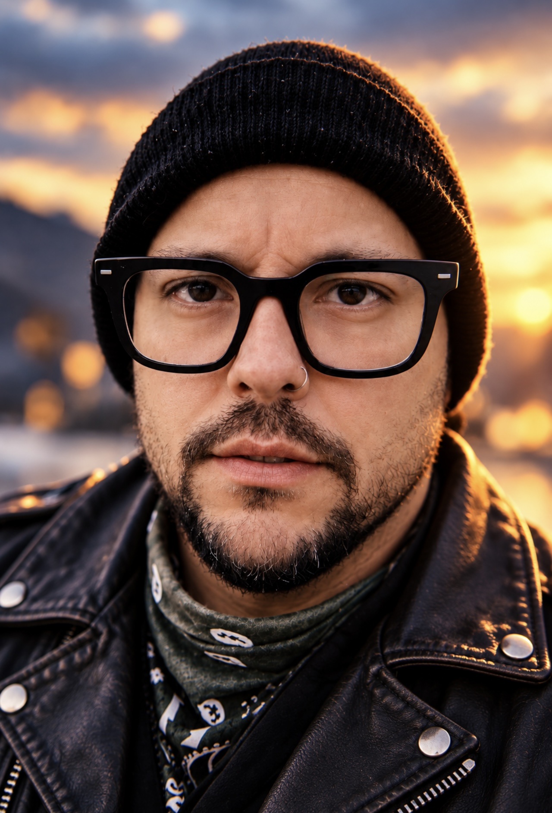
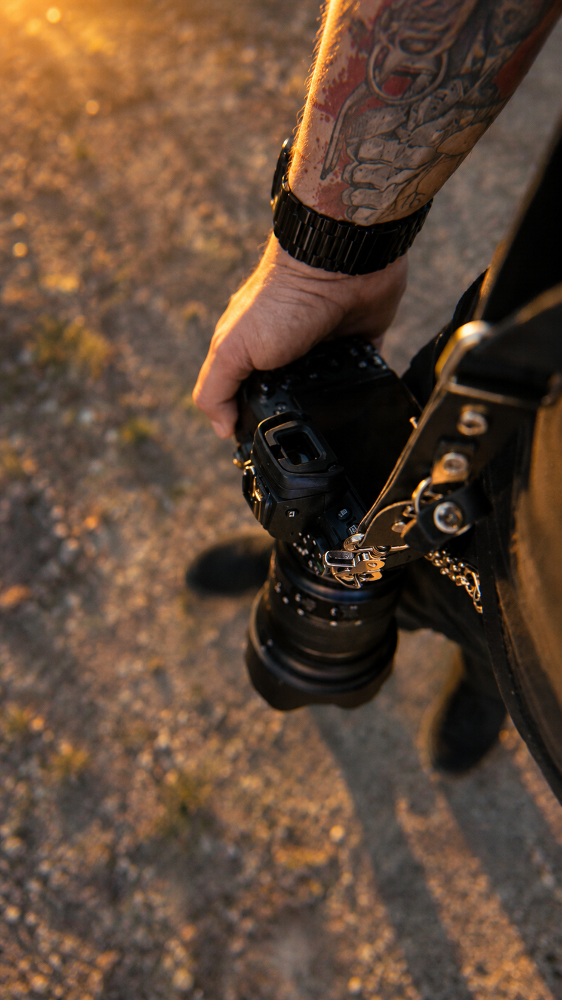

FILMMAKER · FOTÓGRAFO · URUGUAY
Historias que
se sienten.
Soy Nico Paulis, filmmaker y fotógrafo en Uruguay. Hace más de 14 años cuento historias con imagen y sonido. Me involucro desde la idea hasta la edición final para crear piezas con identidad, sensibilidad y un propósito claro.
Más de 14 años creando en imagen y sonido.

MONTEVIDEO
34°54' S · 56°10' W
34°54' S · 56°10' W
IMAGE · MOTION · STORY
CONTENIDO INMOBILIARIO · PROPUESTA MENSUAL
Más que fotos
para publicar.
La idea es trabajar las propiedades desde otro lugar: no solamente sacar unas fotos para publicar, sino generar contenido que realmente tenga ganas de ver alguien que está buscando una casa o un apartamento.
Fotografía, recorridos en video, reels y piezas más dinámicas para redes. Que cada propiedad tenga una buena presentación y que la inmobiliaria pueda mostrar lo que ofrece con una identidad visual más cuidada.
La propuesta es trabajar con un paquete mensual, así tienen contenido de forma constante y podemos organizarnos según las propiedades que vayan ingresando.
Les puedo compartir algunos trabajos que hice para que vean un poco mi estilo y cómo trabajo.
Si les interesa, podemos charlar y armar algo que les sirva de verdad.
Conversemos sobre la propuesta ↗01 / TRABAJO SELECCIONADO
Una mirada.
Distintos mundos.
Más proyectos y procesos en mi perfil de Behance ↗
02 / MOTION · FILM
En movimiento,
todo cobra vida.
Una selección de trabajos audiovisuales para ver desde acá o abrir directamente en YouTube.

Entrevista a Facundo Ponce de León
Ver en YouTube ↗VEMA — Se Acabó (video oficial)
Ver en YouTube ↗
AGENTE 86 — Sueños (video oficial)
Ver en YouTube ↗Please Rewind presenta: Montevideo Comics (el vlog)
Ver en YouTube ↗03 / SERVICIOS & PACKS
Producción pensada
para tu objetivo.
Cada proyecto se adapta a su locación, historia y ritmo. Estos packs son un punto de partida.
01↗
Realización audiovisual
Concepto, dirección y producción para marcas, artistas y proyectos.
02↗
Fotografía & contenido
Imágenes y piezas para comunicar con una identidad visual consistente.
03↗
Edición & montaje
Selección, ritmo, color y sonido para llevar la idea a su versión final.
04↗
Contenido inmobiliario
Foto, video y recorridos para mostrar espacios de manera atractiva. Propuesta conceptual.
PLAN INICIAL
Presencia
$18.000 / mes
Contenido constante para presentar las propiedades que ingresan cada mes.
EL PLAN INCLUYE
- 4 propiedades al mes
- Hasta 20 fotografías editadas por propiedad
- 1 video vertical por propiedad (30–45 segundos)
- Entrega optimizada para redes y portales
- Una jornada de producción semanal, según coordinación
MI RECOMENDADO
Profesional
$28.000 / mes
Más variedad visual para mostrar cada propiedad con mayor detalle y dinamismo.
EL PLAN INCLUYE
- 6 propiedades al mes
- Hasta 25 fotografías editadas por propiedad
- 2 videos verticales por propiedad
- Tomas de detalles y recorrido de ambientes
- Videos con edición dinámica, música y textos
- Entrega en formatos para Instagram y portales
PLAN PREMIUM
Inmobiliaria Plus
$42.000 / mes
Una cobertura amplia y prioritaria para la comunicación de la inmobiliaria.
EL PLAN INCLUYE
- 10 propiedades al mes
- Hasta 30 fotografías por propiedad
- 2 videos verticales por propiedad
- Tomas cinematográficas de interiores y exteriores
- Tomas de dron cuando corresponda
- 1 video institucional mensual de la inmobiliaria
- Prioridad de producción y entregas
Precios sugeridos en pesos uruguayos, antes de IVA si corresponde.
04 / SOBRE MÍ
La curiosidad
marca el encuadre.
Soy Nico Paulis, filmmaker y fotógrafo en Uruguay. Hace más de 14 años trabajo contando historias con imagen y sonido, combinando mirada, oficio y sensibilidad para acompañar a artistas, marcas y equipos.
Trabajo desde la idea inicial hasta la edición final, cuidando cada decisión para que la pieza se sienta propia.
Conocer más trabajos ↗
05 / PRÓXIMO PROYECTO
¿Qué tenés
en mente?
Contame un poco y te respondo por WhatsApp.
Se abrirá WhatsApp con el mensaje listo para revisar y enviar.